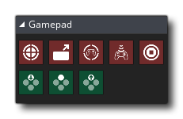

GameMaker Studio 2 verfügt über eine Reihe dedizierter Aktionen, mit denen sowohl analoge als auch digitale Steuerelemente von mehreren verbundenen Game-Pads erkannt werden können. Für diese Aktionen müssen Sie einen Gamepad- Indexwert angeben, bei dem es sich um eine Zahl (von 0 ausgehend) handelt, die das ausgewählte Gamepad darstellt. Beachten Sie, dass wenn ein Gamepad an Ihr Gerät angeschlossen wird (oder es entfernt wird), ein asynchrones Systemereignis ausgelöst wird (um dies zu umgehen, müssen Sie jedoch möglicherweise Code verwenden).
Die Gamepads "Slots" werden von 0 mit den Slots 0 - 3 inklusive indiziert, nur für Xinput Gamepads, also: Xbox360 Controller und Kompatible. Sie können jedoch auch die Slots 4 bis einschließlich ii für DirectInput-Gamepads überprüfen, was bedeutet, dass Sie viele andere Controller-Modelle erkennen können, wenn Sie über diese Slots verbunden sind.
Die verfügbaren Gamepad-Aktionen sind unten aufgeführt:


Kompatibilität
Die folgende Liste zeigt die aktuelle Kompatibilität zwischen den Plattformen (beachten Sie, dass sich dies mit zukünftigen Updates ändert):
- Windows wird vollständig mit maximal 11 verbundenen Geräten gleichzeitig unterstützt. Beachten Sie, dass unter Windows die ersten vier Gamepad-Slots (0 - 3) mit der XInput-DLL behandelt werden. Das bedeutet, dass nur XBox-Controller 100% kompatibel sein können und dass für andere Controller-Typen der Rest der Gamepad-Slots überprüft werden sollte. 11).
- Mac OS wird mit maximal 4 angeschlossenen Geräten auf einmal unterstützt, und diese Geräte können NUR vom Typ Playstation 3 oder Xbox 360 sein. Bitte beachten Sie, dass die " Build für Mac AppStore " -Option in Mac Game Optionen sein muss OFF, damit die Pad-Unterstützung funktioniert.
- Ubuntu unterstützt auch GamePad-Eingaben, aber Sie müssen möglicherweise zusätzliche Bibliotheken aus dem Ubuntu-Repository installieren. Sie können dies leicht tun, indem Sie ein Befehlszeilen-Terminal öffnen und Folgendes eingeben:
sudo apt-get install jstest-gtk
sudo apt-get install joystick.Dadurch wird die GUI-Unterstützung für den Joystick und den Joystick selbst installiert.
- HTML5-Spiele unterstützen Gamepads in den meisten gängigen Browsern, mit Ausnahme von Safari.
- Gamepad-Unterstützung erstreckt sich auch auf iOS mit dem iCade- Gehäuse. Die linke Achse entspricht dem Steuerknüppel (obwohl der Eingang digital ist, nicht analog), die vier "Gesicht" -Knöpfe werden den Fronttasten des Schranks zugeordnet, und die vier Schulterknöpfe werden denen auf der Rückseite des Gehäuses zugeordnet.
- Android Export unterstützt NYKO-Controller und generische Bluetooth-Controller (einschließlich OUYA), aber nur, wenn sie aktiviert sind, was bedeutet, dass Sie die Option iCade / Bluetooth im Bereich Allgemein der Android Spieloptionen aktivieren müssen. Sie benötigen die API-Stufe 12, damit sie vollständig funktionieren, und es sollte beachtet werden, dass sich GameMaker Studio 2 als verbunden mit allen Bluetooth-Geräten registriert, mit denen Ihr Gerät gekoppelt ist, unabhängig davon, ob es tatsächlich verbunden ist oder nicht. Daher sollte dies bei der Zuweisung und Überprüfung von "Slots" berücksichtigt werden.
- Wenn Sie auf der PS4 das Touchpad-Tracking verwenden möchten, müssen Sie die Funktionen für die device_mouse_* Schaltflächen (dafür gibt es keine DnD™ -Aktionen).